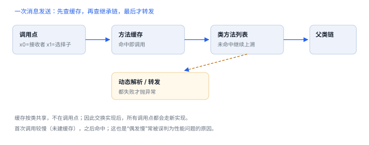

对象与消息派发
调用不是跳转，而是带着选择子的查找过程
Objective-C 的方法调用在源码里写作方括号，在运行时却是一次查找：按接收者找到类，按选择子找到实现，找不到还有补救与转发。理解这条路径，才能解释“为什么 respondsToSelector 为真却崩溃”这类现象。
1. 对象、类与元类
| 角色 | 保存什么 | isa 指向 |
|---|---|---|
| 实例 | 实例变量 | 它的类对象 |
| 类对象 | 实例方法列表、协议、类变量 | 元类 |
| 元类 | 类方法列表 | 根类的元类（链最终指向自身） |
“实例方法存在类对象上、类方法存在元类上”是理解方法查找的关键。给类对象发消息，查的是元类的方法列表；给实例发消息，查的是类及其父类。
2. 一次消息发送经过什么
- 快速路径：用接收者与选择子在方法缓存中查找，命中则直接调用。
- 沿继承链查找：缓存未命中时，从类开始向父类逐级查方法列表。
- 动态解析：仍未找到时，运行时给类一次机会动态提供实现（解析实例方法/类方法）。
- 转发：解析失败则进入转发流程，可把消息转给其他对象，或构造调用签名做最后处理。
- 未处理：都不接，抛出“选择子未识别”的异常。
这条路径解释了两个常见困惑：首次调用某方法比后续慢（缓存未建立）；把方法实现交换后，旧调用点也会走新实现（查找发生在运行时）。

3. 方法缓存的观察含义
- 缓存在类级别，不在调用点；同一方法被多个调用点共享。
- 调试器里看不到“消息发送”这一帧，因为它不是普通函数调用；要看运行时行为需要断在实现或转发入口。
- 缓存失效与重建会影响启动期性能，动态修改方法列表要谨慎。
4. 动态能力的三类用法
| 能力 | 用途 | 代价 |
|---|---|---|
| 方法交换 | 横切逻辑、测试替身 | 顺序敏感、影响全局、难以审计 |
| 动态添加方法 | 按需实现可选协议 | 行为分散、静态分析看不到 |
| 消息转发 | 代理、多播、桥接 | 错误被延后暴露，堆栈不直观 |
查询方法实现与类型信息
Class cls = object_getClass(instance); // 实际类（可能是子类或代理）
Method m = class_getInstanceMethod(cls, @selector(doWork));
IMP imp = method_getImplementation(m);
const char *encoding = method_getTypeEncoding(m);
NSLog(@"%@ %p %s", NSStringFromClass(cls), imp, encoding);5. 安全与可维护性
- 动态派发让“代码里没写”不等于“运行时不会发生”，审计要覆盖交换点与转发实现。
- 不要依赖对象的内存布局或私有元数据作为应用契约，它们不是承诺的接口。
- 动态能力不应被用来隐藏安全决策：把授权判断放在服务端，客户端只负责表达状态。
6. 可验证实验
- 在自有类上实现动态方法解析，打印被请求的选择子，观察“未实现的方法”如何变成可用。
- 交换两个自有方法的实现，验证调用顺序与预期是否一致，并记录恢复方式。
- 沿继承链打印类的父类直到根类，验证你对元类关系的理解。
7. 可观测点：缓存、继承链与转发
| 阶段 | 观测方式 | 说明 |
|---|---|---|
| 缓存命中 | 断点打在实现上 | 命中时不经过查找代码 |
| 沿继承链查找 | 打断点看父类实现 | 子类未实现时落到父类 |
| 转发 | 断在转发入口 | 方法不存在才会走到这里 |
交换是全局的
方法实现存在类对象里，换掉之后所有调用点都受影响——这也是“交换后行为变了但找不到调用点”的原因。
方法实现存在类对象里，换掉之后所有调用点都受影响——这也是“交换后行为变了但找不到调用点”的原因。
8. 数据细节：对象与方法的字节账
| 结构 | 大小 | 含义 |
|---|---|---|
| 对象头 | 16 字节 | 类型指针 + 引用计数相关字段 |
| 方法项 | 24 字节 | 名称、类型、实现三个指针 |
| 方法缓存 | 按类分配 | 命中即跳过查表 |
对象头是理解“按偏移读字段”的起点：第一个业务字段通常从第 17 个字节开始，但会被对齐规则调整。
9. 自测
- 类方法存放在哪里？给类对象发消息时查找起点是什么？
- 为什么首次调用某方法通常比后续慢？
- 方法交换为什么会影响“所有”调用点？